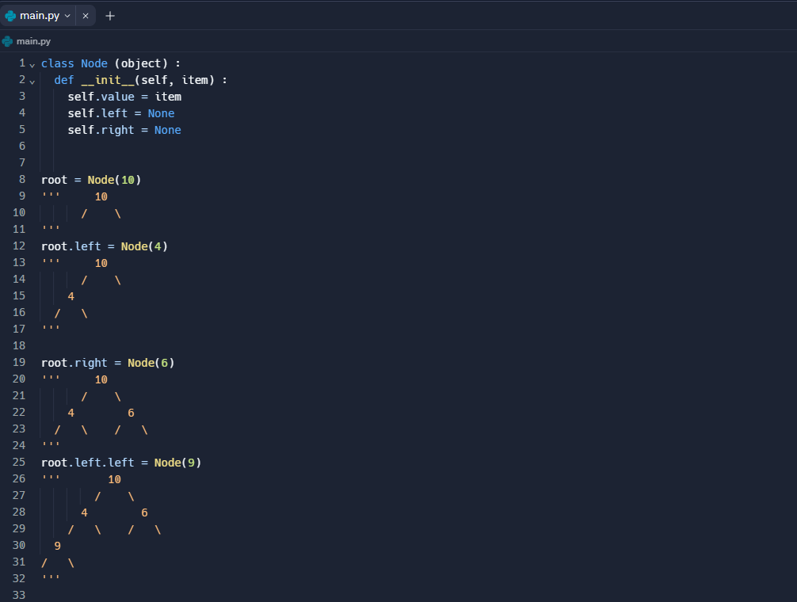
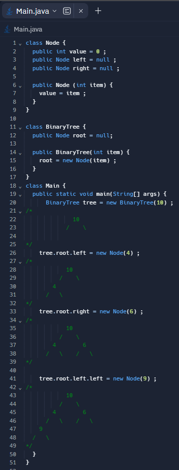
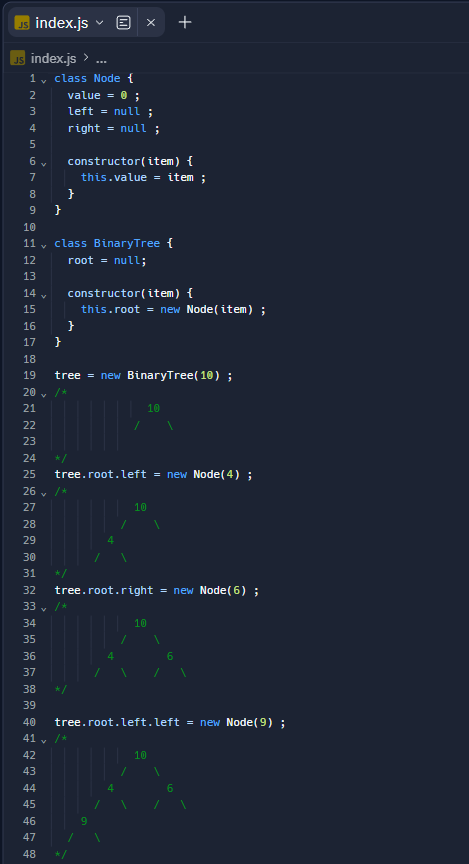

what is a binary tree?
A binary tree is an advanced data structures comprised of series of nodes in a graph structure wherby there is one root node that branches off into 0,1 or 2 child nodes and those nodes can have either 0,1,2 or child nodes and so on.
an unordered binary tree with a depth/height of 3
Welcome to today’s blog where we will be diving into the world of binary trees and the vast use of tree-like data structures. Binary tree is a very broad term so we won't be able to cover all of the different uses for them today however in future blogs I plan to dive into detail on some specific examples of binary trees.
What are we going to talk about?
- Uses for a binary tree. When/why should you use one?
- How to implement a binary tree
- Traversal methods
Uses for a binary tree. When/why should you use one?
Binary trees have many advantages and specific use cases that allow them to be very useful such as:
- Can be used to implement a Priority queue
- Dynamic data structure that allows the adding and removing of elements
- Commonly used in the form of an expression tree, syntax tree or decision tree in compilers to find the correct order of operations and commands.
- Particular sorting methods can be applied such as a heap sort.
- Data can be stored in a hierarchical fashion.
- Many ways of traversing the tree allow binary trees to be used for a variety of abstract data structures like look-up tables, hash trees and many more.
- Huffman trees for compressing data
- Routing trees for network traffic
Since binary trees are such a broad topic it isn’t really a question of should I use a binary tree but rather should I use a particular data structure that requires a binary tree like a priority queue, hash tree or binary search tree. In terms of general similarities between the use cases, the data needs to benefit from one or more advantages of a binary tree such as the dynamic property of the structure, easy access to the root node, sorting methods, hierarchical data and so on…
Overall, Binary trees have a variety of key properties that make them the ideal candidate for many unique problems. These problems span across the vast plain of computer science in ways that seem unexpected but when we look closer, it is clear that they are the best for the job at hand.
How to implement a binary tree
  
In all of the above examples the code uses classes in order to achieve the desired result. A binary tree can be implemented without classes by using a struct; however, a very common way of implementing trees is via classes. The examples above demonstrate a simple binary tree without other functions like removing items from the tree.
Note: If we were to implement a use for binary trees like a Max heap we’d have to consider encapsulation i.e having a method to insert new values and keeping the nodes in the tree private. This is because there would be an algorithm to find where to insert a new value rather than inserting a value into wherever we like as in the examples above.
Traversal methods
Traversals are ways of navigating through a tree by visiting each different node in the tree in a systematic way.
Today I will explain the the three depth first searches (DFS) ‘which as the name suggests, is where you go as deep as possible down one path before backing up and trying a different one
Preorder Traversal:
This traversal is used to create a copy of a binary tree or a prefix from a tree
- Visit the root
- Traverse the left subtree
- Traverse the right subtree
Postorder Traversal:
This traversal is used to delete the tree as we can remove the subtrees first and then the root node.
- Traverse the left subtree
- Traverse the right subtree
- Visit the root
Inorder Traversal:
This traversal is used to print all values in the tree in ascending order of value assuming the tree is in hierarchical structure (sorted)
- Traverse the left subtree
- Visit the root
- Traverse the right subtree
If we look at the example tree at the start of the blog, we can see the different outcomes of the different traversal methods.
Preorder: [10,7,5,6,9,3,5,8]
postorder :[5,9,3,6,7,8,5,10]
inorder :[5,7,9,6,3,10,8,5]
The algorithm can be created very nicely with recursion by recurring over the until you reach the max depth of that path and then recur over the next path and so on based on which algorithm you do
That about rounds it off for today on all things Binary tree related. I hope you found this blog useful and I look forward to exploring this are in more detail in the future